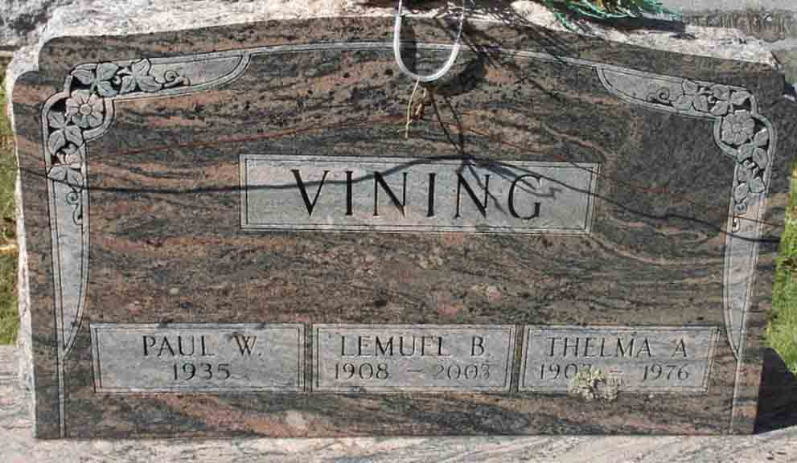

Documentation for Lemuel B. Vining - Thelma A. Swanker
Death Data
Headstone for Lemuel B. Vining Thelma A. (Swanker) Vining, and their son, Paul W. Vining, in Maplecrest Cemetery, Windham, Greene County, New York (from Find A Grave):
